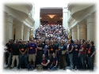
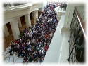

UDS security discussions
The Ubuntu Developer Summit (UDS) is an interesting event. It has a much different format than traditional technical conference because its focus is on making decisions for the upcoming Ubuntu release. I spent much of the conference's second day attending meetings in the security track, where the Ubuntu security team and members of the Ubuntu community discussed various topics of interest, with an eye toward what would end up in Oneiric Ocelot (11.10). Those meetings provided a look into the workings of the distribution and its security team.

All of the UDS meetings are set up the same, with a "fishbowl" of half-a-dozen chairs in the center where the microphone is placed so that audio from the meeting can be streamed live. There are two projector screens in each room, one showing the IRC channel so that external participants can comment and ask questions; the other is generally "tuned" to the Etherpad notes for the session, though it can be showing the Launchpad blueprint or some other document of interest.
The team that is running the meeting sits in the fishbowl, while the other attendees are seated just outside of it; sometimes all over the floor and spilling out into the hallway. "Audience" participation is clearly an important part of UDS sessions.
Involving the community
The session on improving the community's relationship with the security team was rescheduled at the last minute—something that occurs with some frequency at UDS—but that didn't deter the folks who showed up from discussing the issue. The discussions at UDS "require" the presence of certain individuals or representatives of teams, and when they are not available, meetings get rescheduled. In this case, a community team representative was unavailable, but the discussion rolled on anyway.
One attendee was interested in the opportunities available for those who are interested in helping out with Ubuntu security. Team members responded that one of the main areas where the security team needs help is in handling updates for the "universe" packages. Those packages are community maintained, which in practice means that some are well maintained and some are not. That stands in contrast to the packages in "main" which are maintained by the security team so security updates are issued in a timely fashion.
Organizations or individuals could adopt packages in universe and ensure that they get timely updates as well. It is an excellent opportunity for anyone who does some programming to learn about Debian packaging, security practices, using the repositories, and more. For folks that are looking to become Ubuntu developers, doing updates for a package or packages would be good experience as well as looking good in the application process.
Interested users don't have to be security experts to help out, it's a matter of following any upstream security updates, applying them, and then testing. The testing needs to minimally determine that it fixes the problem in question, and doesn't break the application. For people interested in security but who don't know where to start, adopting a universe package for security updates is an excellent starting point.
Another audience member was interested in what protections there were for the process of creating and signing packages, as well as how the security team would handle a situation where a sensitive account was compromised. Without getting into specifics, the team explained that there are tools, logging, and procedures in place to detect and handle these kinds of problems. Should an event like that occur, emergency plans have been devised to handle it.
For updates, the security team acts as a buffer between the packagers and the signing process. There is a process that updates go through, which includes looking at the updated code and some automated testing to look for things like permission problems and setuid programs. There is a lot more testing that could be done automatically, which is something that the team would like to add and that could be done in collaboration with others. A Google employee who attended noted that the company was interested in using those kinds of tools, so that might be one opportunity for collaboration.
Security roundtable
Daily "roundtable" sessions are held in the morning for several of the tracks at UDS. Security was no exception. The sessions are kind of "catch-alls" that allow discussion of smaller topics that don't require a full hour, as well as allowing people to bring up topics that might need a full session scheduled later in the week.
The two main topics discussed in Tuesday's roundtable were the dissemination of Ubuntu security notices (USNs) and the idea of putting together a whitepaper that looked at the statistics of security updates for various releases. The team was trying to decide if there was value in continuing to put the USNs on the Bugtraq and Full-disclosure mailing lists given that there is a dedicated Ubuntu-security-announce list as well as a web page that tracks the USNs (the LWN security updates were also noted as a good source).
The general feeling was that anyone truly interested in following Ubuntu security updates would use one of the other methods, rather than try to extract them from the rest of the traffic on Bugtraq or Full-disclosure. One team member noted that the usefulness of Bugtraq dropped significantly when vendors started overwhelming the list with security updates. The current practice of sending to those lists is something that came into Ubuntu from Debian's practices. In the end, it was decided that an announcement would be made to those lists that Ubuntu would no longer post USNs there and pointing to the other sources of the update information.
A whitepaper that looked at the types and severities of vulnerabilities fixed for a particular Ubuntu release was also discussed. It would be a fair amount of work to pull together and there were questions about the purpose a study like that would serve. There are some technical hurdles in that many of the CVEs in the Ubuntu system are classified as "medium" because those values represent the priority of getting a fix out rather than the severity of the vulnerability.
There was some concern that such a study would not be worth the time that was invested in it. There were also worries that the whitepaper might be interpreted to be a comparison to the reports periodically issued by Red Hat. On the other hand, there may be lessons for the team in a report of that sort, including finding classes of vulnerabilities that could be short-circuited via kernel or other changes. Some of the data is already collected as part of the self-analysis that the team does monthly, so the general feeling seemed to be that at least gathering the rest of the data would be a useful exercise. Whether it results in a whitepaper probably depends on how much time the team can find to pull one together.
Ubuntu security notices
USNs came up in another discussion to look at the format of those announcements. While it may be something of a boring subject for some, it is important to communicate the important information about a security vulnerability in security announcements. In addition, some of the elements that make up the announcement end up in other places, like the Update Manager's description of an update.
The team had recently tweaked the format of USNs and wanted to discuss formalizing some of the language and formatting in the various elements. The first order of business was the "Issue Summary", which is a one-line description of the update. That is what appears in Update Manager so it needs to be written so that it is readable by anyone. That, of course, is difficult to do without either getting into security jargon or going on at length. Some standardization of the terminology and descriptions was deemed desirable, so the plan is to try to create templates for ten or so common application types (e.g. kernel, apache, firefox, ...) that would be vetted by the documentation and user experience teams for readability.
Other tweaks to the format were also discussed such as cleaning up the "Software Description" section that sometimes has multiple entries for the same package, which can be confusing. Creating a wiki page that described how to update the system (i.e. run Update Manager) which could be linked from announcements was also planned.
A look inside the sausage factory

While some of these sessions may seem a little bland, I found them interesting for a number of reasons. In a week's time I was able to get a glimpse into what goes into the decision-making process for an Ubuntu release. It is a very community-oriented process that tries to be as inclusive as it can be, while still being focused on the task at hand. Rather than just having Canonical employees make decisions about the smaller details, hearing and acting on the community's concerns is clearly an important part of the process.
There were two or three hundred such sessions throughout the week, some looking into fairly emotional topics (like default web browser and email client) or others about adding support for an out-of-tree kernel feature to the distribution. I also sat through a review of the kernel configuration parameters to determine which would be enabled or disabled for the Oneiric kernel. It was somewhat tedious, as would probably be expected, but an interesting exercise that is done, in public, for each Ubuntu release.
And that is the essence of UDS: public review and discussion of the features that will appear in five-and-a-half months or so. There are also meals, parties, and lots of talks outside of the sessions—much like any conference—but the focus is clearly on getting things done.
[ I would like to thank Canonical for sponsoring my travel to Budapest for
UDS. ]
| Index entries for this article | |
|---|---|
| Security | Distribution security |
| Conference | Ubuntu Developer Summit/2011 |